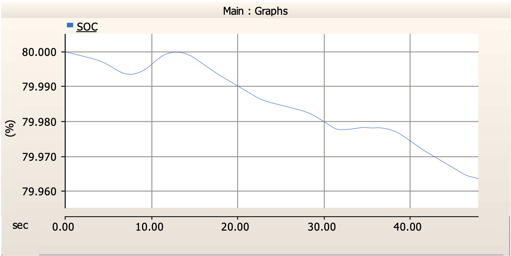

Grid-Connected PV Microgrid with Battery Storage
This project explores the conceptualization, design, and simulation of a grid-connected photovoltaic (PV) microgrid integrated with battery storage. Built in PSCAD, the system aims to deliver seamless power by leveraging solar energy during the day and battery discharge during the night. Through optimized power electronics and controller design, the model demonstrates a technically stable and economically viable solution for distributed renewable energy deployment.
1. System Overview
The proposed microgrid consists of a 45 kW PV array connected to the grid through smart converters, a battery bank capable of supplying 140 kWh over 12 hours, and dynamic load-handling capability. The system operates in two distinct modes: daytime solar supply and nighttime battery discharge, effectively creating a 24-hour clean energy cycle. Key hardware includes 132 SPR-X-21-345 PV panels and 390 batteries rated at 48V, 10Ah each.

2. Power Electronics and Converter Design
To ensure stable power conversion, the microgrid uses a three-stage converter configuration:
- Boost Converter: Steps up PV voltage to a regulated level for efficient grid injection.
- Buck-Boost Converter: Enables flexible control of the battery—charging when solar surplus exists and discharging during load demand.
- Active Rectifier: Smooths AC voltage and current delivered to local loads, ensuring waveform purity.
Each converter was precisely tuned using Bode plot analysis to maintain acceptable phase margin and avoid instability during load switching.
3. Battery Storage Strategy
Battery sizing was conducted based on a 12-hour nighttime consumption model. A total of 140 kWh was required to support off-sunload periods, leading to the selection of 390 batteries. These batteries store energy during solar production peaks and discharge overnight, enabling uninterrupted power delivery without reliance on the grid.

4. Simulation Performance & Operational Flow
Dynamic simulations in PSCAD validated the system's real-time performance under varying irradiance and demand cycles. Key insights include:
- PV Output: Accurately tracks solar peaks, contributing to daytime load directly.
- Battery Operation: Demonstrates clean charge/discharge cycles — Charging: 9–13s and 33–35s; Discharging: 0–9s, 14–33s, 38–48s.
- Inverter Output: Maintains a stable three-phase voltage profile, essential for load consistency.


5. Economic Feasibility
A detailed economic assessment shows the total system cost to be approximately $118,000. Based on annual energy output of 101,545 kWh and electricity rates of $0.12/kWh, the project yields the following results:
- Annual Energy Savings: $26,981.32
- Simple Payback Period: 4.37 years
- Return on Investment: 22.88%
These metrics suggest a financially compelling investment, particularly in off-grid or developing regions with high energy costs.
6. Conclusion & Replicability
This PSCAD-based PV microgrid provides a strong case for hybrid renewable energy systems with integrated storage. Its two-mode operation, robust converter control, and cost-effectiveness make it highly adaptable to both rural electrification and commercial backup scenarios. With proven technical and economic viability, this model is a scalable blueprint for future clean energy deployments.